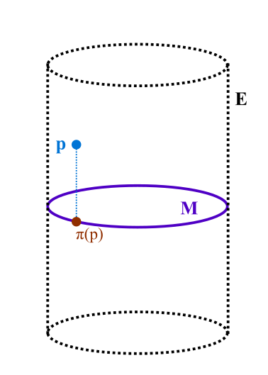

4 Fields
So far we’ve focused on the tangent space (and its dual) at a single point p\in\mathcal{M}. As physicists, we are interested in vector fields, i.e. a vector at every point in space. The rigorous way to do this is the Theory of Bundles. So, we develope it…
4.1 Bundles
Definition: A bundle is a triple E\xrightarrow{\pi}M where
- E is a smooth manifold called the total space
- \pi:E\to M is the smooth, surjective projection map
- M is a smooth manifold called the base space
Any 3 pieces of data like this are called a bundle.
4.1.1 Example: The cylinder
We can think of E as a cylinder, M as a circle, and \pi chosen to to project the point on the cylinder vertically down to z=0 on the circle. See $fig-cylinderbundle

Definition: Given a bundle (E,\pi, M), we define the fibre over p as \text{preim}_\pi(\{p \})
Definition: A section \sigma is a map \sigma:M\to E (i.e. this goes the other way!) with the requirement that \begin{equation} \pi \circ \sigma = \text{Id}_M \end{equation}
As physicists now, we may consider our manifold \mathcal{M} where the fibres over each p\in\mathcal{M} are just T_p\mathcal{M}. What would the sections be? A section here would be a map that gives a vector for every point p\in\mathcal{M}. This is exactly what we think of when we think of vector fields.
Summary: The sections are our physics notion of fields. The type of field is determined by the type of fibre. 1
The natual next question is what is the total space we are thinking of? Can we collect each T_p\mathcal{M} into a smooth manifold?
4.2 Tangent Bundle of a Smooth Manifold
Let (\mathcal{M}, \mathcal{O}, \mathscr{A}) be a smooth manifold. We define the Tangent Bundle
as a set, it is the disjoint union of tangent spaces: \begin{equation} T\mathcal{M} := \bigcup\limits_{p\in \mathcal{M}}^\bullet T_p\mathcal{M} \end{equation}
The surjective projection map is \pi:T\mathcal{M} \to \mathcal{M} with \begin{equation} X \mapsto p \end{equation}
At this point we need to turn T\mathcal{M} into a smooth manifold. First we make T\mathcal{M} into a topological manifold by equipping it with a topology. Since we already have a topology on \mathcal{M} what we do is to construct a topology on T\mathcal{M} that is the coarsest possible topology such that \pi becomes continuous, i.e. the initial topology with respect to \pi: \begin{equation} \mathcal{O}_{T\mathcal{M}} := \left\{ \text{preim}_\pi(\mathcal{U}) \Big\vert \mathcal{U}\in\mathcal{O}_\mathcal{M}\right\} \end{equation} This makes sense as we definitly want \pi to be continuous and therefor it must map open sets to open sets.
Now we construct a C^{\infty} atlas on T\mathcal{M} from \mathscr{A} we already have on \mathcal{M}. \begin{equation} \mathscr{A}_{T\mathcal{M}} := \left\{ (T\mathcal{U}, \xi_x) \Big\vert (\mathcal{U}, x)\in \mathscr{A} \right\} \end{equation} where2 \begin{align} \xi_x&: T\mathcal{U} \to \mathbb{R}^{2\text{ dim}\mathcal{M}} \\ X &\mapsto \left( (x^1\circ \pi)(X), ... , (x^d\circ\pi)(X), (dx^1)_{\pi(x)}(X), ..., (dx^d)_{\pi(x)}(X) \right) \end{align}
2 We do not mean s-multiplication here. We can multiply by any g\in C^{\infty}(\mathcal{M}) since we can define the multiplication pointwise using multiplication in \mathbb{R}.
Further, we may consider the inverse of the chartmap \begin{align} \xi_x^{-1}&: \xi_x(T\mathcal{U}) \to T\mathcal{U} \\ (\alpha^1,...\alpha^d, \beta^1, ... \beta^d) &:= \beta^i\left(\dfrac{\partial}{\partial x^i}\right)_{x^{-1}(\alpha^1, ..., \alpha^d)} \end{align}
Now we must ask: are these chart maps smooth?
\begin{align} &(\xi_y\circ\xi_x^{-1})(\alpha^1,...\alpha^d,\beta^1,...,\beta^d) = \xi_y\left(\beta^i\left(\dfrac{\partial}{\partial x^i}\right)_{x^{-1}(\alpha^1, ..., \alpha^d)}\right)\\ &\qquad = \Big(..., (y^i\circ\pi)\left(\beta^n\left(\dfrac{\partial}{\partial x^n}\right)_{x^{-1}(\alpha^1, ..., \alpha^d)}\right),..., \\ &\qquad\qquad ...,(dy^i)_{x^{-1}(\alpha^1,...\alpha^d)}\left(\beta^n\left(\dfrac{\partial}{\partial x^n}\right)_{x^{-1}(\alpha^1, ... , \alpha^d)}\right) ,... \Big) \\ &\qquad = \left(..., (y^i\circ x^{-1})(\alpha^1,...,\alpha^d),..., ...,\beta^n dy^i\left(\frac{\partial}{\partial x^n}\right) , ... \right) \\ &\qquad = \left(..., (y^i\circ x^{-1})(\alpha^1,...,\alpha^d),..., ...,\beta^n \left(\frac{\partial y^i}{\partial x^n}\right) , ... \right) \\ \end{align} Is this a smooth map? Yes, because the chart transition map y^i\circ x^{-1} are smooth and so are the change of coordinate functions \frac{\partial y^i}{\partial x^j}.
Thus, we can conclude that (T\mathcal{M}, \pi, \mathcal{M}) really is a bundle which we call the Tangent bundle
4.3 Vector Fields
Definition: A smooth vector field \chi is a smooth section of the tangent bundle (T\mathcal{M}, \pi, \mathcal{M}), i.e. \begin{align} &\chi:\mathcal{M}\to T\mathcal{M} \\ &\pi\circ\chi = \text{Id}_\mathcal{M} \end{align}
4.4 The C^{\infty}(\mathcal{M})-module \Gamma(T\mathcal{M})
Definition: We define \Gamma(T\mathcal{M}) as \begin{equation} \Gamma(T\mathcal{M}) = \left\{ \chi:T\mathcal{M}\to\mathcal{M}\Big\vert \text{ smooth section } \right\} \end{equation} which we equip with addition by3 \begin{equation} (\chi + \tilde\chi)(f) := \chi f + \tilde\chi f \end{equation}
4 We do not mean s-multiplication here. We can multiply by any g\in C^{\infty}(\mathcal{M}) since we can define the multiplication pointwise using multiplication in \mathbb{R}.
The special case of a vector field over the ring is called a module.
Upshot: The set of all smooth vector fields can be made into a C^{\infty}(\mathcal{M})-module.
We can now use \frac{\partial}{\partial x^i}:\mathcal{U}\to T\mathcal{U} with no supscript for the point to denote the coordinate induced vector field.
4.5 Tensor Fields
In much the same way as we constructed \Gamma(T\mathcal{M}), we can define the cotangent fields via \Gamma(T^*\mathcal{M}) using the cotangent bundle (T^*\mathcal{M}, \pi, \mathcal{M}). With these two objects in hand, we proceed to tensor fields.
Definition: An (r,s)-tensor field T is a C^{\infty}(\mathcal{M})-multi-linear map \begin{equation} T: \Gamma(T^*\mathcal{M})\times \underset{r}{...}\times \Gamma(T^*\mathcal{M})\times \Gamma(T^\mathcal{M})\underset{s}{...}\times \Gamma(T^\mathcal{M}) \xrightarrow{\sim} C^{\infty}(\mathcal{M}) \end{equation}
4.5.1 Example
For any f\in C^{\infty}(\mathcal{M}), we define \begin{align} &df : \gamma(T\mathcal{M}) \xrightarrow{\sim} C^{\infty}(\mathcal{M}) \\ &\chi \mapsto df(\chi) \end{align} where (\chi f)(p) = \chi(p)f.